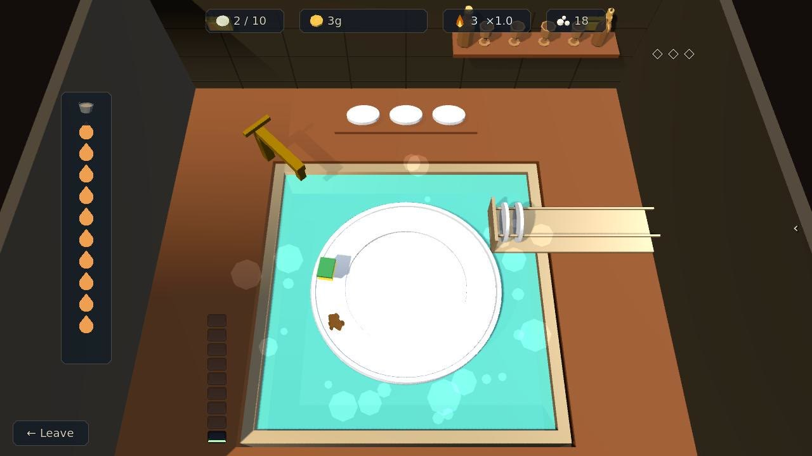
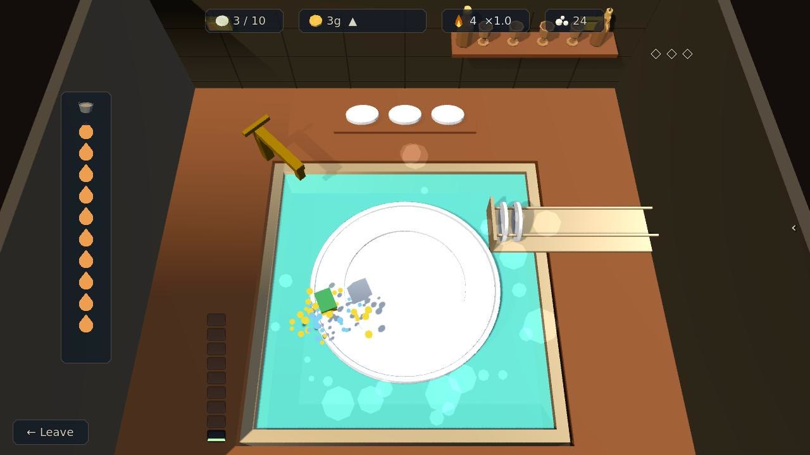
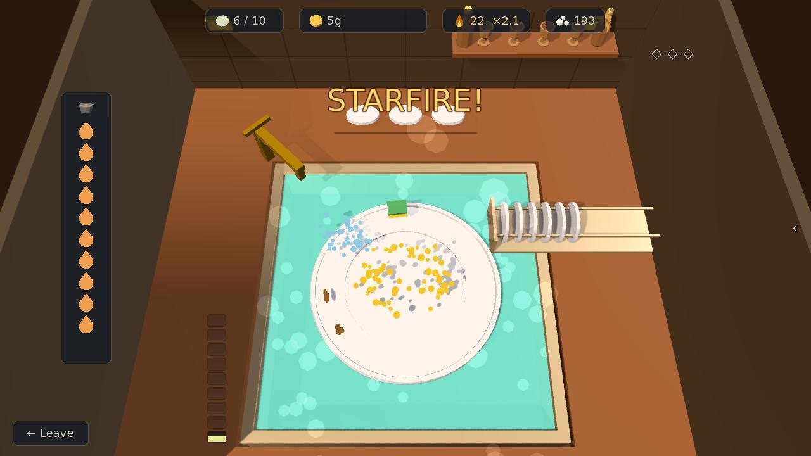
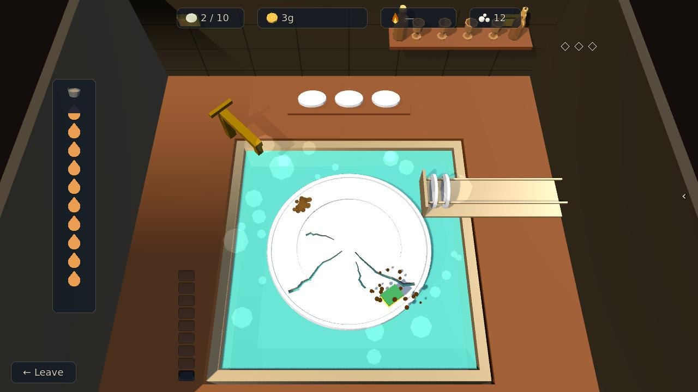
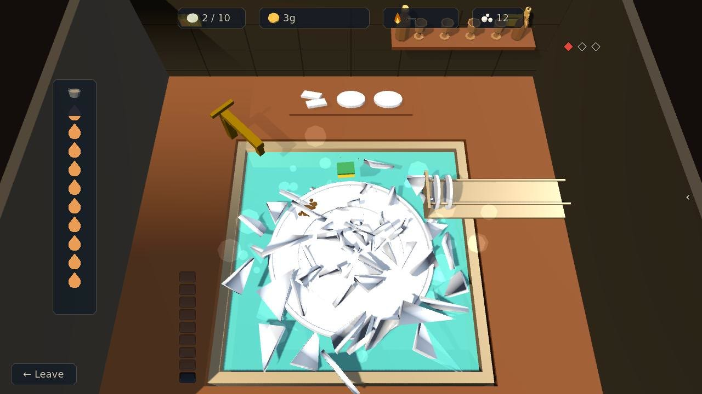
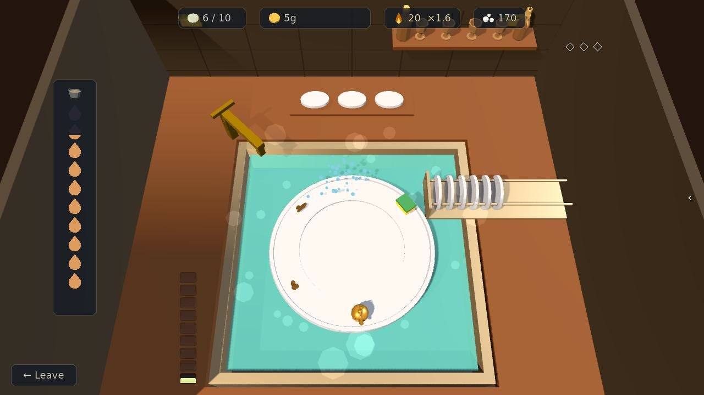
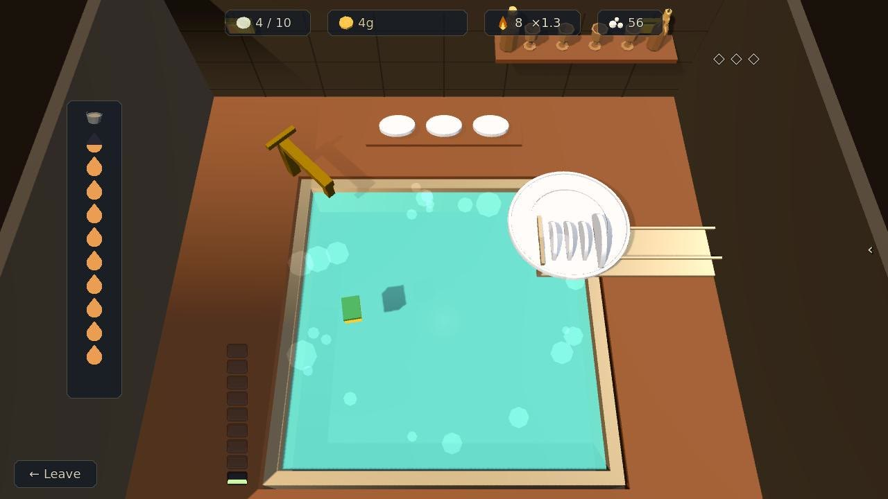

Dish Duty
Scrub the muck off the tavern's plates: click the instant the circling sponge crosses a spot, and keep your flow going before the hot water runs cold.
Step by step
-

1The sponge2Muck1The sponge2Muck Step 1Watch the sponge
The sponge circles the rim of the plate on its own. Your part is the timing: watch it come round to a caked-on spot of muck.
-

1Scrubbed1Scrubbed Step 2Scrub on the spot
Click or press Space the instant the sponge crosses the muck. Grime is crusted on in layers, so a spot can take more than one clean scrub, and every good scrub flips the sponge's direction. A scrub that doesn't finish a lump throws it on round the rim, so be ready to chase it.
-

1Your flow2A flow call1Your flow2A flow call Step 3Build your flow
Nail scrubs back to back to build your flow: faster sweeps, tighter timing and more suds, and each step up is called over the sink, from Spark! to Comet!, Starfire! and Firstlight! Hold right-click or Shift to make the sponge sweep faster.
-

1A chip2A slip1A chip2A slip Step 4Don't slip
A mistimed scrub slips: your flow breaks, grime smears back where you slipped, and the plate takes a chip. A plate that makes it to the rack leaves its chips behind.
-

1A strike2Strikes1A strike2Strikes Step 5Three chips and it shatters
Three chips on one plate and it shatters: no pay, and a strike. A plate on the shelf above the sink breaks with it and a mark at the top right turns red. Three strikes and the cook sends you off for the sitting.
-

1Hot water2A kettle1Hot water2A kettle Step 6Mind the hot water
The hot water drains as you work, drop by drop down the column beside the sink, and when it runs cold the shift ends there. Scrub a kettle off a plate's rim and it tops the water back up, so it's worth going out of your way for.
-

1To the rack2Plates3Next plate pays1To the rack2Plates3Next plate pays Step 7Rack the plate
A clean plate slides off to the rack. Pay climbs the longer you stay, from 1g a plate to 6g once you're rolling. Finish the rack for +10g, and wash six or more in one sitting without smashing one for +15g on top. There's one load a day, and leaving early restarts the pay ladder.
The rules, as the game tells them
- The sponge circles the plate — CLICK / SPACE the instant it crosses a caked-on MUCK spot
- Grime is crusted on in LAYERS — the further into the rack, the more clean scrubs a spot takes
- Every good scrub flips the sponge's direction — stay sharp
- Nail scrubs back-to-back to build your FLOW: faster sweeps, tighter timing, MORE suds
- A scrub that doesn't finish a lump THROWS it on round the rim — sometimes clear to the far side — so be ready to chase it
- A mistimed scrub SLIPS: your flow breaks, grime smears back where you slipped, and THIS plate CHIPS
- 3 chips on one plate and it SHATTERS — no pay, and a strike. 3 strikes and the cook sends you off — this sitting is over
- A plate that makes it to the rack leaves its chips behind — only a SHATTERED plate costs you
- The HOT WATER drains as you work — let it run cold and the shift ends there
- Scrub a KETTLE off a plate's rim and it tops the water back up — worth going out of your way for
- Pay CLIMBS the longer you stay: 1g for your first plates, 6g once you're rolling
- Finish the whole rack for +10g. Wash 6 or more in ONE sitting without smashing a single plate for +15g on top of that
- Faster? hold RIGHT-CLICK / SHIFT. One load a day — and leaving early restarts the pay ladder
Word for word from the game: in play the same text sits behind the ? on the board, so this page cannot drift from it.